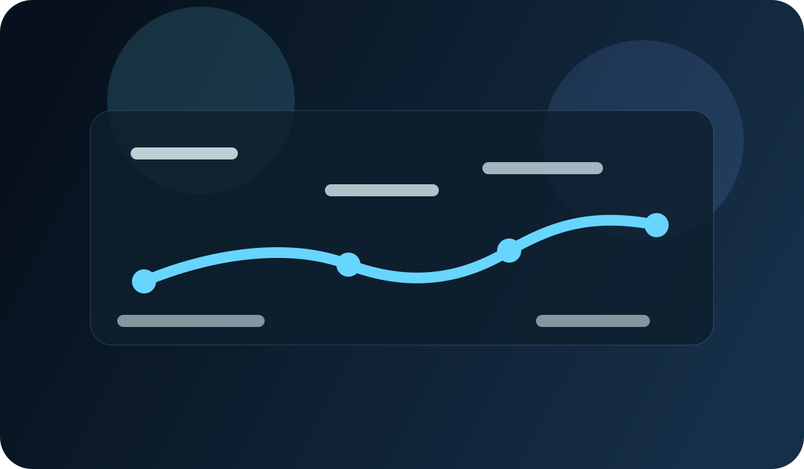

My roadmap from CSIT student to data analyst
I am still in the middle of this journey, but I have learned that becoming a data analyst is less about knowing everything at once and more about building fundamentals consistently.
Step 1: Build the foundation
As a CSIT student, I am learning the core logic behind computers, problem-solving, and technology. That foundation matters because data analysis is not only about spreadsheets; it is also about thinking clearly and working with structured systems.
Step 2: Learn practical tools
Tools like Excel, SQL, and Python are important because they help turn raw information into actionable insight. I am focusing on learning the workflow: collect, clean, analyze, and communicate findings.
Step 3: Solve real problems
Data analysis becomes meaningful when it answers actual questions. That is why I am trying to build projects that reflect real-world thinking: trends, comparisons, business questions, and evidence-based recommendations.
Step 4: Keep improving
My goal is not to become perfect overnight. It is to stay disciplined, keep learning, and keep building a portfolio that reflects real growth. That is how I believe the path toward a data-focused career becomes stronger over time.
- Learn the basics deeply rather than rushing.
- Practice with real datasets and real questions.
- Document lessons and share progress honestly.
- Keep working on both technical and communication skills.